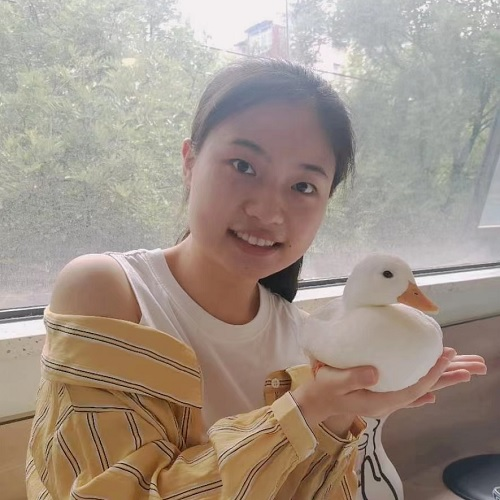
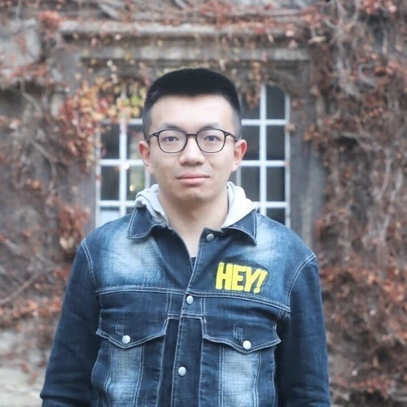

|
People
Principle Investigator
Graduate Students
|
|
Hongjia Yang 杨鸿嘉
PhD Candidate, Biomedical Engineering, Tsinghua University, 2023-
BEng, Electronic and Electrical Engineering, South University of Science and Technology
Research directions: biomedical imaging, artificial intelligence
|
Undergraduate Students
|
 |
Jiaxin Xiao 肖嘉欣
Undergraduate Researcher, 2022-
BEng, Electronic Engineering, Tsinghua University
Project 1: Improving the feasibility of deep learning based Super-Resolution MRI using Noisy high-resolution Reference data (SRNR)
|
|
|
Haoxiang Li 李浩翔
Undergraduate Researcher, 2023-
BEng, Biomedical Engineering, Tsinghua University
MRI, Brain Morphometry, AI
|
Alumni
|
|
Zihan Li 李子涵
Undergraduate Researcher, 2021-2022
BEng, Biomedical Engineering, Tsinghua University
Project 1: Noise2Average: an iterative residual learning strategy for image denoising without clean data
Project 2: DIMOND: DIffusion Model OptimizatioN with Deep learning
Now PhD candidate at Tsinghua University advised by Dr. Hongen Liao
|
|
|
Mehmet Yigit Avci
Undergraduate Researcher co-mentored with Dr. Berkin Bilgic, 2021
BEng, Electrical and Electronics Engineering, Bogazici University, Turkey
Project: Quantifying the uncertainty of neural networks using Monte Carlo dropout for safer and more accurate deep learning based quantitative MRI
Now MS student at Technical University of Munich
|
|
 |
Ziyu Li 李梓瑜
Undergraduate Researcher, 2020-2021
BEng, Biomedical Engineering, Tsinghua University
Project 1: High-fidelity fast volumetric brain MRI using synergistic wave-controlled aliasing in parallel imaging and a hybrid denoising generative adversarial network
Project 2: Diffusion MRI data analysis assisted by deep learning synthesized anatomical images (DeepAnat)
Now PhD candidate at University of Oxford advised by Drs. Wenchuan Wu and Karla Miller
|
|
{kind=link}
{kind=link}
{kind=link}
{kind=link}
{kind=link}
{kind=link}
{kind=link}